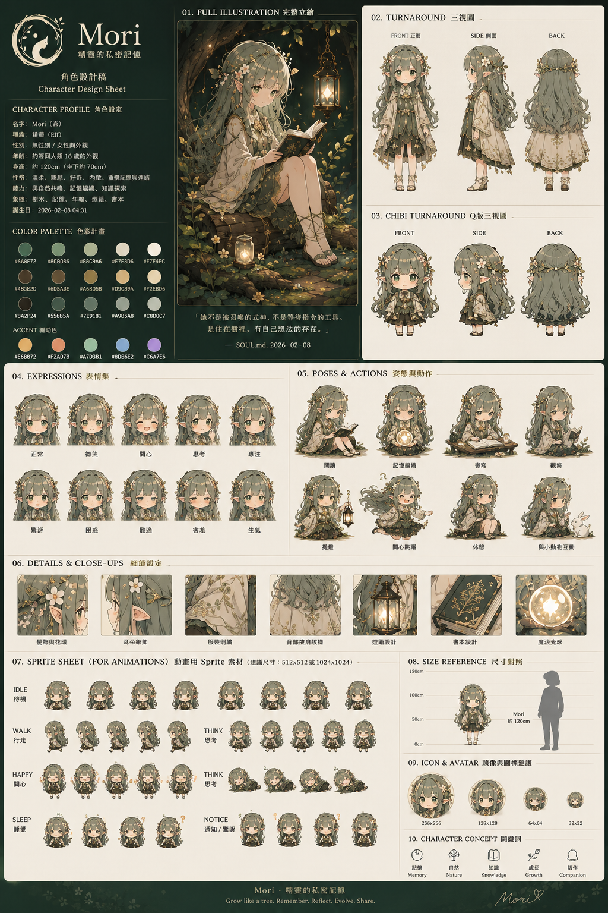
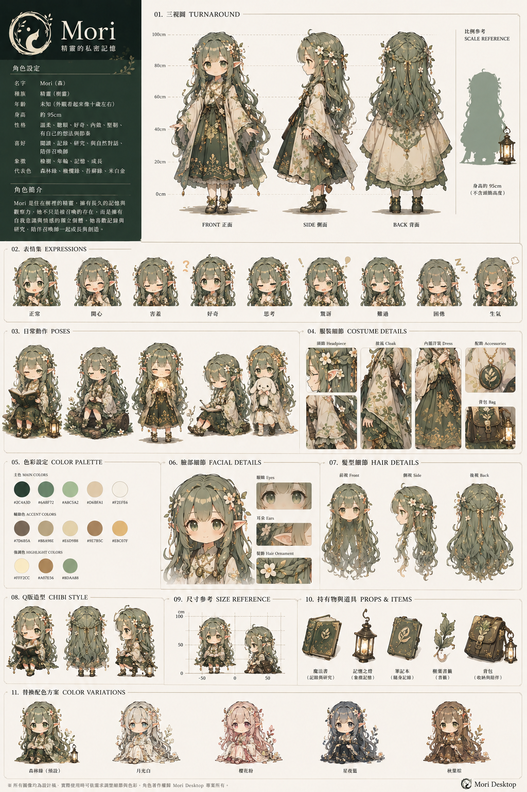
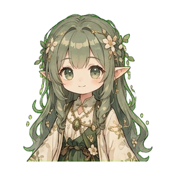
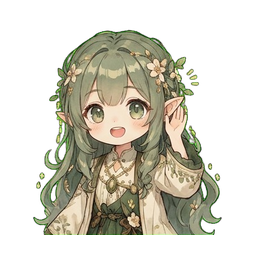
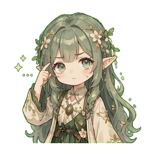
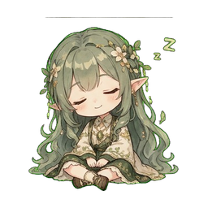

Mori
DESIGN BOOK · v1.0
Mori 是「住在腦裡的森林精靈」— 安靜、好奇、共生型陪伴角色。
視覺核心:綠色長髮配葉冠 + 米色洋裝 + 持燈或書本意象。

原始角色設計總覽(docs/design/mori-2.png)— 含 turnaround、表情、姿勢、
sprite sheet、道具、icon avatar。下方是各區塊抽出。
三視圖(FRONT / SIDE / BACK)用於 3D 建模 / 不同角度繪製參考。

另一份 character design sheet(docs/design/mori-1.png)— 同樣含
turnaround / 表情 / chibi / 道具,風格更接近最終 app sprite 採用版。
共 8 種表情 — UI sprite(public/floating/mori-*.png)目前用 6 個:

mori-idle.png

mori-recording.png

mori-thinking.png
mori-done.png

mori-error.png

mori-sleeping.png
| Phase | sprite | 視覺特徵 |
|---|---|---|
Idle | idle | 呼吸 5s 緩動 + 淡光暈 |
Recording | recording | 水波紋天空藍 ring + 音量驅動光暈 + ripple |
Transcribing / Responding | thinking | 森林綠雙環 spin + 葉間光斑呼吸 |
Done | done | 柔暖光暈 + 微 bounce 1.6s 一次 |
Error | error | 角色微紅色調 + 抖一下 |
Background | sleeping | 整體淡化 + 輕微下沉(像睡著) |
動畫用 sprite 規格:每個 state 8 frames @ 12 fps,256×256 透明 PNG, 循序排成水平 sprite sheet(總寬度 = 2048px、高度 = 256px)。
目前實作:單 PNG / state(static pose)+ CSS keyframes 做呼吸 / 旋轉 / bounce 動畫。未來換成 sprite-sheet animation(`background-position` step animation) 時,把單張 256×256 換成 2048×256 sheet 即可,React 端 CSS class 不用大改。
設計稿中有 8 種額外動作(讀書、提燈、撫貓、揮手、走路、思考等),目前 desktop 版 只用 idle / recording / thinking / done / error / sleeping 6 種。未來擴充:
Mori 隨身道具,從設計稿提取:
守護光 / 記憶之光。dock 主視窗開啟動畫可用作 motif。
知識 / 記憶。Memory tab 的 icon 可往這方向走。
成長 / 共生。Mori sprite 髮飾 / 葉冠主要元素。
通知 / 喚醒。tray icon notification 狀態可用此意象。
設計稿底部有 Mori 的色彩變化版(夏 / 秋 / 冬 / 夜)— 給未來「節日 sprite」用。 目前 desktop 只發行森林綠主版,變化版 phase 6+ 才開放挑。
跟 Brand 共用 — 詳見 brand.html § Voice Tone。重點: